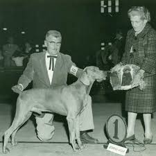
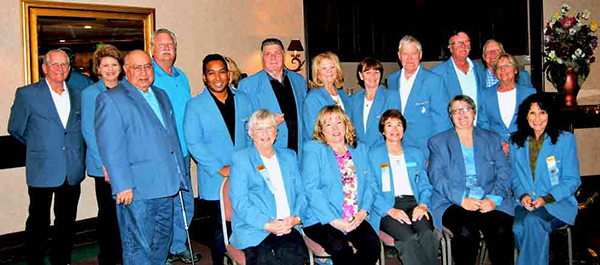
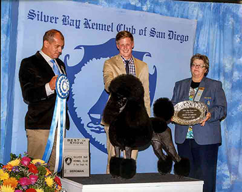

Established in 1934, Silver Bay Kennel Club of San Diego (SBKC) is one of the oldest kennel clubs in Southern California. Major Charles Beale, USMC, founded the club, which held its first show with an entry of 401 dogs and continued with two shows a year. By 1982, the SBKC show was listed as the eleventh largest show in the United States with 2,603 dogs competing in conformation at the SBKC’s 50th Anniversary
The Open Senior winner traveled to Crufts dog show in England to compete for the world title and the Open Junior winner represented the USA at the World Show in Puerto Rico. In 2003, SBKC held its first agility trial, an athletic event that requires conditioning, concentration, training and team work. A segment for the Jeopardy! TV show was filmed at its 2009 show.

The Club garnered national attention when selected to host the Pedigree Brand Junior Showmanship “National Invitational” on February 22, 1997, televised by ESPN. The Open Senior winner traveled to Crufts dog show in England to compete for the world title and the Open Junior winner represented the USA at the World Show in Puerto Rico. In 2003, SBKC held its first agility trial, an athletic event that requires conditioning, concentration, training and team work. A segment for the Jeopardy! TV show was filmed at its 2009 show.

SBKC has an activist, devoted, limited working membership. From 1972 until 2003, James E. Frank served as president and was instrumental in establishing a “Pet for Seniors” program. This program helps senior citizens adopt a dog at several local shelters with SBKC paying the adoption fees. The program has successfully united approximately 900 dogs with senior citizens. BKC donates show proceeds to many different organizations concerned with animal welfare including, most recently, AKC Canine Health Foundation, California Federation of Dog Clubs, Canine Companions for Independence, Fiesta Island Dog Owners, National Animal Interest Alliance and San Diego Humane Society and SPCA.
SBKC donates show proceeds to many different organizations concerned with animal welfare including, most recently, AKC Canine Health Foundation, California Federation of Dog Clubs, Canine Companions for Independence, Fiesta Island Dog Owners, National Animal Interest Alliance and San Diego Humane Society and SPCA. In order to help educate the public about various AKC breeds and to promote responsible dog ownership, SBKC started a “Meet the Breeds” program in 2000, increasing AKC breed exhibits from 10 to 47 by 2012.
President:
N. D. Adreson
Email:dsfdfds@gmail.com
(858-111-8899)
since 2003 to present
Nancy brings years of experience and expertise to this position, having been involved in the fancy for 35 years as a breeder, exhibitor, club officer, judge and delegate, said Ronald H. Menaker, SBKC Chairman of the Board.
Vice President:
Jan P. Hill
Email:dsfdfds@gmail.com
Jan brings years of experience and expertise to this position, having been involved in the fancy for 35 years as a breeder, exhibitor, club officer, judge and delegate. This expertise, coupled with the broad scope of his responsibilities over the last 15 years, make him most qualified to take on this role.
Treasurer:
Roselyn Coz
fndfhbvhfgv@gmail.com
Recording Secretary:
Lynn Smith
fndfhbvhfgv@gmail.com
Corresponding Secretary:
Michelle Coz
fndfhbvhfgv@gmail.com
Dog Show Committee
The Delegates may elect standing committees with goals and charges established in a standing rule on committees adopted by the Delegates. The Coordinating Committee, which oversees the operation of these standing committees, is made up of the Chairs of all of the committees.
Chairman: David A. Helming
F. Avery Bourke, Philip M. Bogdanovitch, Dorothy N. Collier, Darrell W. Crate, Barclay Douglas, Jr., Johnston L. Evans, David W. Haddock, David A. Helming, William M. Jackson, Charlton Reynders III, T. Williams Roberts, III, Harvey M. Wooding
Office Email: info@silverbaykennelclub.org
Know more about events and shows
